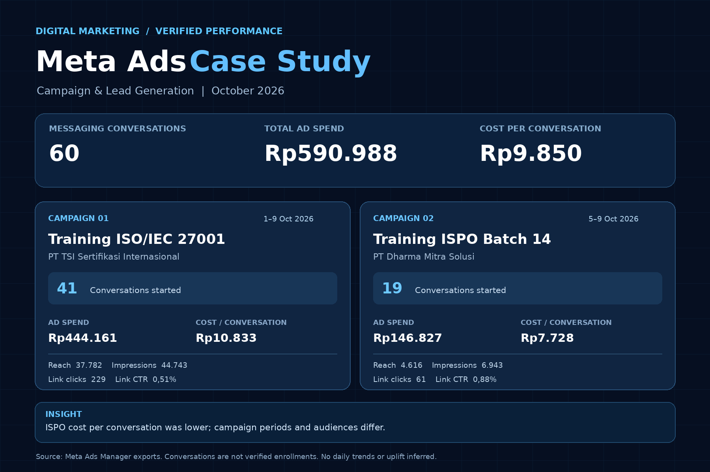

Training ISO/IEC 27001
PT TSI Sertifikasi Internasional · WhatsApp messaging
41conversations started
Ad spendRp444.161
Cost / conversationRp10.833
Reach37.782
Impressions44.743
Link clicks229
Link CTR0,51%
Two Meta Ads messaging campaigns for professional training programs, managed end-to-end from creative planning and audience targeting to campaign execution and performance reporting.

Combined totals from two separate Meta Ads Manager campaign exports covering different reporting windows in October 2026.
These are Meta-reported messaging conversations started, not verified qualified leads, paid registrations, or sales. Reach figures are not summed because audiences may overlap.
*The DMS export labels 4.616 as “Viewers,” not “Reach”; metric labels are preserved as exported.
As the Digital Marketing professional responsible for both campaigns, I handled the complete workflow: campaign planning, creative direction and copywriting, audience setup, budget allocation, ad publishing, monitoring, and performance analysis.
Defined campaign goals, relevant audiences, messaging approach, and budgets for each training program.
Prepared advertising creatives and copy, configured campaigns in Meta Ads Manager, and launched messaging ads.
Reviewed conversations, spend, cost per result, reach or viewers, and link-click performance to evaluate campaign delivery.
The ISPO campaign recorded a lower cost per messaging conversation (Rp7.728) than the ISO/IEC 27001 campaign (Rp10.833). However, their audiences, objectives, and reporting periods were not identical, so this is a descriptive comparison rather than a controlled performance test.
The key lesson: meaningful reporting separates platform-reported inquiries from verified lead quality and enrollments. The next evaluation stage would require CRM or registration data to measure downstream conversions.